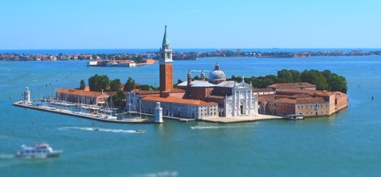
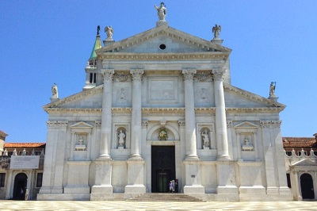
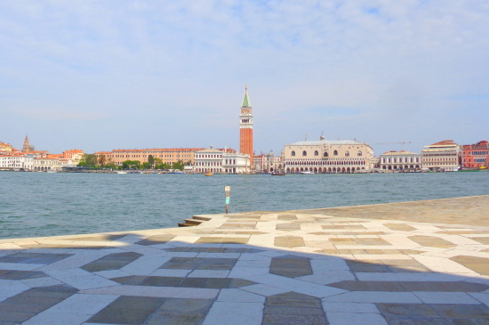

San Giorgio Maggiore ist eine kleine Insel in der Lagune von Venedig. Sie ist nur gut 200 Meter von der Altstadt von Venedig entfernt. Noch näher ist die größere Nachbarinsel Giudecca, der Kanal zwischen den beiden Inseln ist an der engsten Stelle nur ungefähr 30 Meter breit. San Giorgio Maggiore ist aber eine echte Insel, also ohne Brücken zum Nachbarn Guidecca. Touristen kommen in großen Mengen auf die Insel. Die wichtigsten Sehenswürdigkeiten sind die Kirche San Giorgio Maggiore und deren Glockenturm. Von dem Kirchturm hat man einen wunderbaren Blick auf die wichtigsten Sehenswürdigkeiten von Venedig wie den Palast der Dogen, die Markus-Basilika und den berühmten Turm dieser Kirche.

Wie im Bild oben zu sehen ist San Giorgio Maggiore eine sehr kleine, eher runde Insel. Die Fläche ist nur etwa 0,1 km² (10 Hektar).
In San Giorgio Maggiore wurde Pius VII. zum Papst gewählt, da man wegen des Feldzugs Napoleons in Italien und der Besetzung Roms durch französische Truppen das Konklave nach Venedig verlegt hatte. Pius VII. - mit bürgerlichem Namen Graf Luigi Barnaba Niccolò Maria Chiaramonti - wurde am 14. August 1742 in Cesena geboren. Er wurde im Jahr 1800 hier im Kloster zum Papst gewählt und hatte dieses Amt bis zu seinem Tod inne. Er verstarb am 20. August 1823 in Rom. Während der Besetzung Venedigs durch die Franzosen wurde auch das Kloster San Giorgio Maggiore ausgeplündert und die Jahrhunderte alte Bibliothek aufgelöst. Seit dieser Zeit verfiel das Kloster. Etwa um die Mitte des 20. Jahrhunderts wurden die Klosterbauten auf Initiative der Familie Cini restauriert und einer neuen Nutzung als Kulturzentrum zugeführt.
Auf der Insel ist neben der Kirche ein ehemaliges Kloster, welches man allerdings nur an bestimmten Tagen mit einer geführten Tour besichtigen kann (vor allem am Wochenende). Bei einem solchen Rundgang sieht man auch die schönen Klostergärten mit dem Labyrinth-Garten "Labirinto Borgos" und dem Freiluft-Theater "Teatro Verde" im Stil der Antike von Griechenland. Ein solchen Rundgang kann man derzeit (Sommer 2020) nur im Internet buchen, vor Ort gibt es keine geöffnete Kasse. Kaum eine Tour in Venedig wird von Teilnehmern so gut bewertet wie der Rundgang (Dauer etwa 1 Stunde) durch die Insel San Giorgio Maggiore. Zudem kostet die Tour nicht einmal 20 Euro, sehr preiswert für Venedig

Die große Attraktion der Insel San Giorgio Maggiore sind aber die Kirche Chiesa di San Giorgio Maggiore und die Besteigung des Glockenturms. Die Kirche gehört zu den Top 5 Kirchen in Venedig und ist auf alle Fälle einen Besuch wert. Der Entwurf der Basilika stammt von dem sehr berühmten Architekten Andrea Palladio aus dem 16. Jahrhundert. Der Bauplan war im Jahr 1566 fertig, bereits 1575 stand er Rumpf des Gotteshauses. Die Fertigstellung der Benediktiner-Kirche um 1610 erlebte der Architekt Palladio nicht mehr, er starb 1580.
Typisch für Palladio ist die grandiose weiße Frontseite der Basilica San Giorgio Maggiore im antiken Stil. Im riesigen, sehr hellen Inneren der Chiesa San Giorgio Maggiore sind einige Gemälde weltberühmt. Dazu gehören unter anderem die beiden großen Bilder "Das letzte Abendmahl" und "Der Fall von Manna" von Jacopo Tintoretto. Diese beiden Kunstwerke sind direkt links und rechts vom Altar. Man kann den Altar in der San Giorgio von hinten betreten. Auch das Bild im Altar "Anbetung der Hirten" von Jacopo Bassano gehört zu dem ganz großen Gemälden von Venedig. Uns haben auch die mächtigen Pfeiler und Rundbögen in der Kirche sehr gut gefallen. Es gibt weitere, zum Teil sehr berühmte Bilder in der Kirche Giorgio Maggiore in Venedig. Dazu gehören Kunstwerke von Jacopo Tintoretto, Alessandro Vittoria, Leandro Bassano, Domenico Michiel, Jacopo Bassano, Georg von Jacopo, Alessandro Vittoria und einige mehr. Die meisten sind Bilder, aber auch einige Statuen sind darunter. Auch im Kloster der Insel, das man nur im Rahmen einer Führung (Rundgang, siehe oben) besuchen kann, sind einige bekannte Kunstwerke. Zudem hat die Kirche eine gute und bekannte Orgel. Die Kirche San Giorgio Maggiore ist seit dem Jahr 1900 eine Basilica minor (also eine "kleinere" Basilika). Der damalige Papst Leo XIII gab dem Gotteshaus den Titel Basilica minor. Die Frontseite der Kirche ist meist in der Sonne. Sie erinnert an einen antiken römischen Tempel, typisch für den Architekten Andrea Palladio. Er liebte antike Elemente in seinen Bauten. Es ist bis heute eine Benediktinerkirche.
Ein weiteres Highlight der Insel ist der Blick hinüber nach Venedig. Man sieht vom Platz vor der Kirche oder vom Glockenturm sehr gut den nahen Dogenpalast und den Glockenturm des Markusdoms.

Montag - Samstag: 09.00 - 12.30 Uhr - 14.30 - 18.30 Uhr Sonntag: 14.30 - 17.00 Uhr
Werktags: 08.00 Uhr Sonntags: 11.00 UhrAbbey Basilika von San Giorgio Maggiore Werktags: 06.45 Uhr Morgengebet